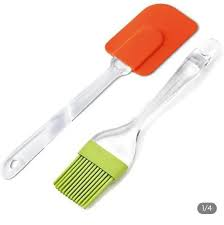

04/09/08: Spatulas
Yesterday I went to the store and got some new spatulas.
So fresh and so clean
Yesterday I went to the store and got some new spatulas.
My favorite cartoon character is cookie, and my favorite dessert is cupcakes. My favorite recipe: Cookie Cupcakes! Basically a chocolate chip cookie in cupcake form. So cookie cupcakes are the best of both worlds